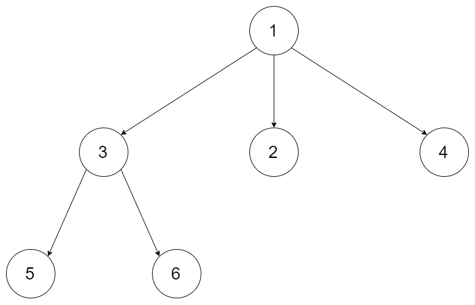
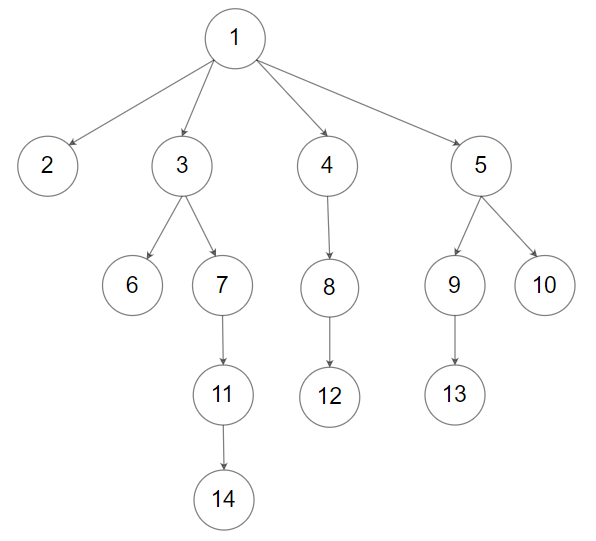

589. N 叉树的前序遍历
迭代前序：栈顶出栈即访问，孩子倒序压栈让第一个孩子始终在栈顶。
思路
- 递归改显式栈：弹出即写入输出，「根最先」由出栈顺序天然保证。
- 关键动作：孩子倒序压栈——栈后进先出，倒着放正着出，第一个孩子永远下一个被访问。
- 空树直接返回空列表；每个结点进出栈各一次，整体 O(n)。
图解
最优解
1import java.util.*;2 3/*4// Definition for a Node.5class Node {6 public int val;7 public List<Node> children;8 9 public Node() {}10 11 public Node(int _val) {12 val = _val;13 }14 15 public Node(int _val, List<Node> _children) {16 val = _val;17 children = _children;18 }19};20*/21 22class Solution {23 public List<Integer> preorder(Node root) {24 List<Integer> out = new ArrayList<>();25 Deque<Node> stack = new ArrayDeque<>();26 if (root != null) stack.push(root);27 while (!stack.isEmpty()) {28 Node node = stack.pop(); // 弹出即访问：前序 = 根最先29 out.add(node.val);30 // 孩子倒序压栈：下一次弹出的才是第一个孩子31 for (int i = node.children.size() - 1; i >= 0; i--) stack.push(node.children.get(i));32 }33 return out;34 }35}题目
给定一个 n 叉树的根节点 root ，返回 其节点值的 前序遍历 。
n 叉树 在输入中按层序遍历进行序列化表示，每组子节点由空值 null 分隔（请参见示例）。
示例 1：

输入：root = [1,null,3,2,4,null,5,6] 输出：[1,3,5,6,2,4]
示例 2：

输入：root = [1,null,2,3,4,5,null,null,6,7,null,8,null,9,10,null,null,11,null,12,null,13,null,null,14] 输出：[1,2,3,6,7,11,14,4,8,12,5,9,13,10]
提示：
- 节点总数在范围
[0, 104]内 0 <= Node.val <= 104- n 叉树的高度小于或等于
1000
进阶：递归法很简单，你可以使用迭代法完成此题吗?
题面取自力扣当前版本。
数据快照 2026-11-04。题面版权归力扣所有，本站点仅供本人学习使用，请勿对外发布。